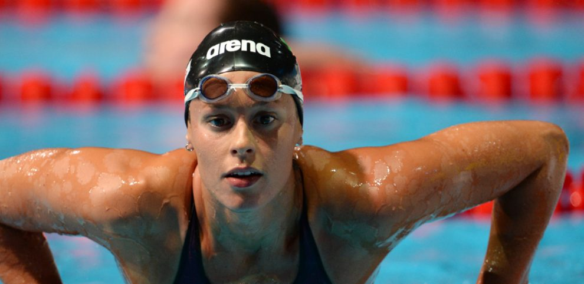

STILE LIBERO FEDERICA PALLEGRINI
Lo stile libero o crawl è lo stile più famoso e tra i più facili da praticare. È un toccasana per tonificare glutei e addome, oltre che per rinforzare spalle e pettorali.
Il movimento delle gambe e il tipico alternarsi delle bracciate lo rendono lo stile più veloce e quindi adatto anche per sviluppare una muscolatura snella in modo armonico.
Uno dei principali motivi che spinge le persone a preferirlo ad altri stili è quello della velocità, infatti, tra gli stili esistenti è quello che assicura una maggiore velocità nell’acqua è proprio lo stile libero.
Federica Pellegrini (Mirano, 5 agosto 1988) è una nuotatrice italiana specializzata nello stile libero. In questa specialità è la primatista mondiale in carica nei 200 m ed europea nei 400 m.
Considerata la più grande nuotatrice italiana, ed una delle più forti e longeve di sempre, in carriera ha preso parte a quattro rassegne olimpiche: la prima nel 2004 quando, solo sedicenne, conquistò la medaglia d'argento nei 200 m stile libero divenendo all’epoca la più giovane atleta italiana a salire su un podio olimpico individuale. Quattro anni dopo, ai Giochi di Pechino, vinse in quella stessa gara la medaglia d'oro regalando all'Italia il primo successo olimpico femminile nella storia del nuoto.
